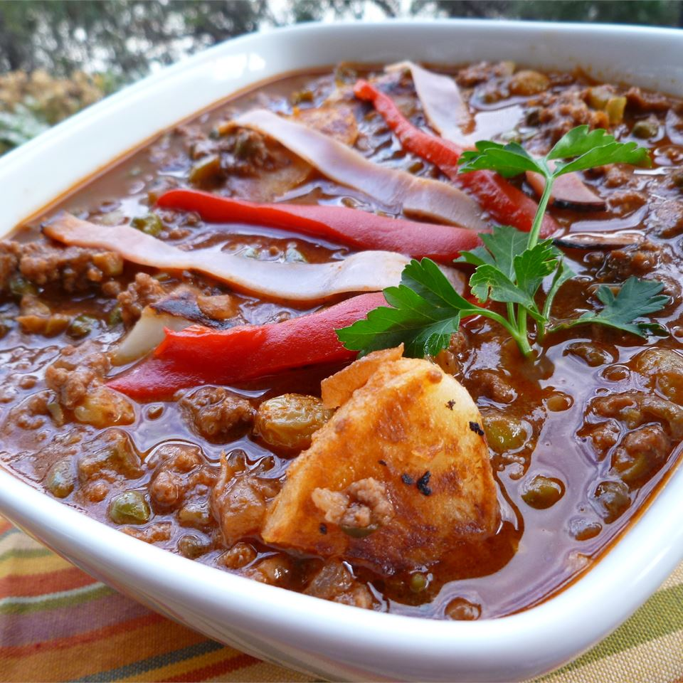

Cuban-Style Picadillo

Ingredients
- 2 potatoes
- salt to taste
- 2 tablespoons olive oil
- 1 onion, minced
- 1 green bell pepper, minced
- 2 teaspoons crushed garlic
- 1 ½ pounds lean ground beef
- 2 cups dry red wine
- 1 (15 ounce) can tomato sauce
- ⅔ cup pimiento-stuffed green olives, drained and chopped
- ½ cup capers, drained
- ¼ cup golden raisins
- 1 teaspoon ground cumin
- 1 pinch dried oregano
- ¼ teaspoon black pepper
- ¼ teaspoon salt
- 1 teaspoon olive oil
Steps
-
Place the potatoes into a large pot with enough water to cover; season with salt. Bring the water to a boil;
reduce heat to medium-low, place a cover on the pot, and cook the potatoes at a simmer until tender, about 20 minutes. Drain and set aside to cool.
-
Heat 2 tablespoons olive oil in a large Dutch oven over medium heat; cook and stir the onion, green bell pepper,
and garlic in the hot oil until the vegetables soften, about 5 minutes.
-
Crumble the ground beef into the onion mixture, breaking the meat into smaller pieces as you mix;
cook and stir until the beef is completely browned, 7 to 10 minutes. Drain as much fat from the mixture as possible.
-
Stir the red wine, tomato sauce, olives, capers, golden raisins, cumin, oregano, black pepper,
and 1/4 teaspoon salt into the ground beef mixture. Bring to a boil, reduce heat to medium-low, and cook at a simmer until the wine had reduced significantly, 25 to 30 minutes.
- Peel the cooled potatoes and cut into chunks.
- Heat 1 teaspoon olive oil in a skillet over medium heat. Cook the potatoes in the hot oil until browned, about 5 minutes.
- Gently fold the cooked potatoes into the simmering ground beef mixture; cook together 5 minutes.
Return to main page